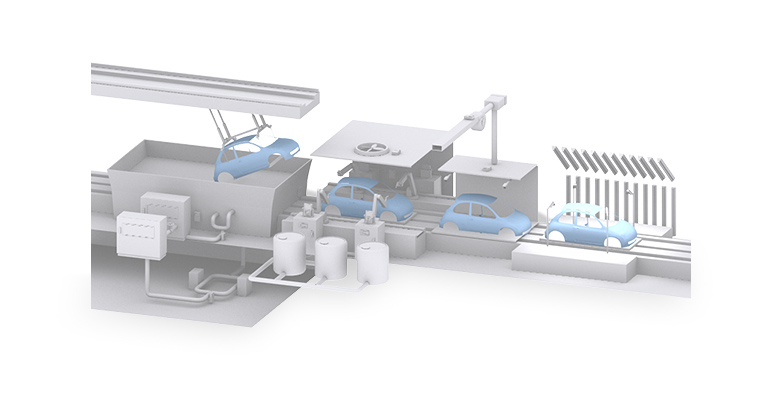
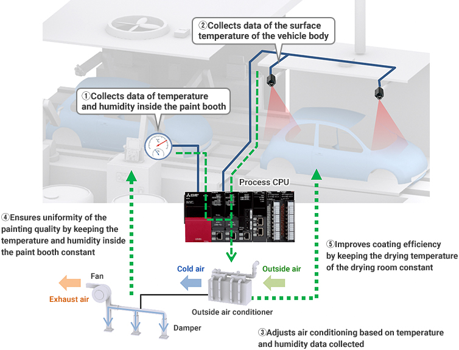
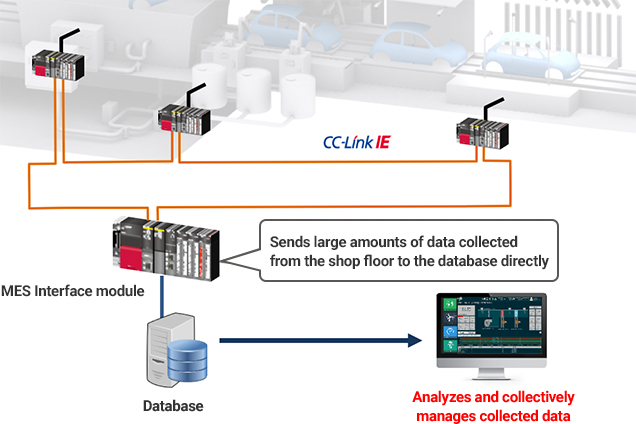
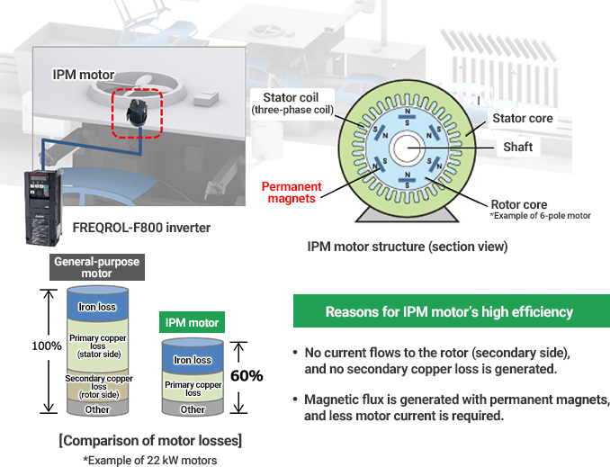

Solusi
Manufaktur Otomotif

Pengecatan
- Memastikan keseragaman kualitas pengecatan dengan mengendalikan suhu dan kelembaban, serta menyesuaikan keseimbangan asupan/pembuangan udara pada booth pengecatan
- Meningkatkan kualitas dengan mengumpulkan, menganalisis, dan mengelola secara kolektif berbagai data dari beragam peralatan, seperti suhu, kelembaban, dan asupan/pembuangan udara
- Menghemat energi kipas asupan/pembuangan untuk booth pengecatan

Solusi untuk Masalah
| Masalah | Solusi |
|---|---|
| Memastikan keseragaman kualitas pengecatan dengan mengendalikan suhu dan kelembaban, serta menyesuaikan keseimbangan asupan/pembuangan udara pada booth pengecatan | Mengontrol suhu (menggunakan kontrol PID) dan pengondisian udara untuk memastikan keseragaman kualitas pengecatan. |
| Meningkatkan kualitas dengan mengumpulkan, menganalisis, dan mengelola secara kolektif berbagai data dari beragam peralatan, seperti suhu, kelembaban, dan asupan/pembuangan udara | Mengirim data dalam jumlah besar ke database melalui modul MES Interface dan mengelola data secara kolektif. |
| Menghemat energi kipas asupan/pembuangan untuk booth pengecatan | Menggerakkan motor dengan daya lebih sedikit dengan menggunakan motor IPM yang sangat efisien. |
Masalah
Memastikan keseragaman kualitas pengecatan dengan mengendalikan suhu dan kelembaban, serta menyesuaikan keseimbangan asupan/pembuangan udara pada booth pengecatan
Solusi
Mengukur suhu dan kelembaban dengan termometer, higrometer, dan kamera termografik, serta menggunakan CPU proses untuk mengontrol suhu (menggunakan kontrol PID) dan pengondisian udara, memastikan keseragaman kualitas pengecatan.
- Menjaga lingkungan booth pengecatan dan ruang pengeringan tetap konstan dengan menyesuaikan kipas dan damper berdasarkan data yang dikumpulkan dalam CPU proses.
Poin
- Modul CPU proses seri MELSEC iQ-R dapat melakukan kontrol PID lanjutan dan kontrol umum kecepatan tinggi secara bersamaan.
- Kontrol proses lanjutan dapat dicapai dengan menggunakan instruksi kontrol proses seperti kontrol PID dua derajat kebebasan dan auto tuning.

Daftar Produk
Masalah
Meningkatkan kualitas dengan mengumpulkan, menganalisis, dan mengelola secara kolektif berbagai data dari beragam peralatan, seperti suhu, kelembaban, dan asupan/pembuangan udara
Solusi
Mengumpulkan data suhu, kelembaban, asupan/pembuangan udara, dll. dari berbagai peralatan seperti lapisan dasar dan sealer dan mengirim data dalam jumlah besar tersebut ke database melalui modul MES Interface untuk pengelolaan kolektif. Menganalisis dan memvisualisasikan data untuk meningkatkan produktivitas dan kualitas.
- Modul MES Interface (RD81MES96N) dapat terhubung langsung ke database, yang memungkinkan koneksi ke database pada Linux® OS selain Windows®.
Poin
- Fungsi DB buffering melindungi data transmisi yang dikirim ke database bahkan ketika terjadi kesalahan komunikasi.

Daftar Produk


Masalah
Menghemat energi kipas asupan/pembuangan untuk booth pengecatan
Solusi
Menggunakan motor IPM yang sangat efisien untuk menghemat energi dengan menggerakkan motor dengan daya lebih sedikit dan mengurangi kehilangan daya motor.
- Inverter FREQROL-F800 dapat menggerakkan motor MM-EFS/MM-THE4 IPM dan motor IPM pihak ketiga.
- Motor IPM yang sangat efisien menghemat energi dengan mengurangi kehilangan daya motor dan konsumsi daya yang tidak perlu.
Poin
- Motor IPM dengan magnet permanen bawaan memiliki kehilangan daya motor lebih sedikit daripada motor tujuan umum.
- Motor IPM dapat dengan mudah menggantikan motor tujuan umum karena memiliki dimensi pemasangan yang sama.
